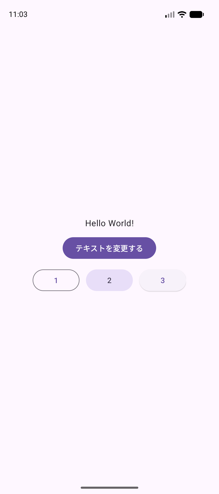
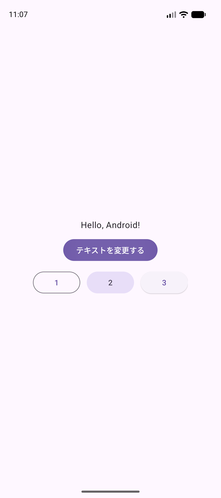
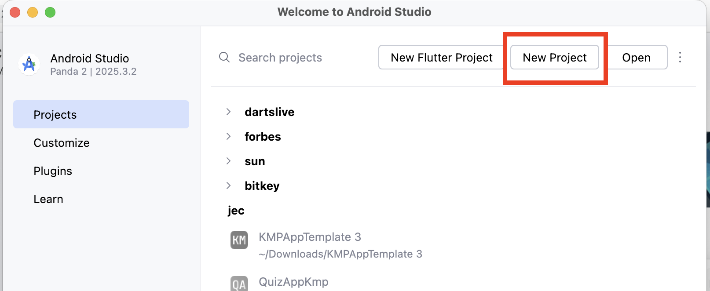
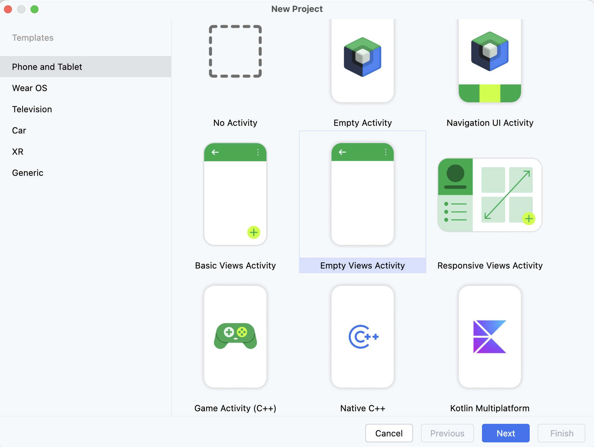
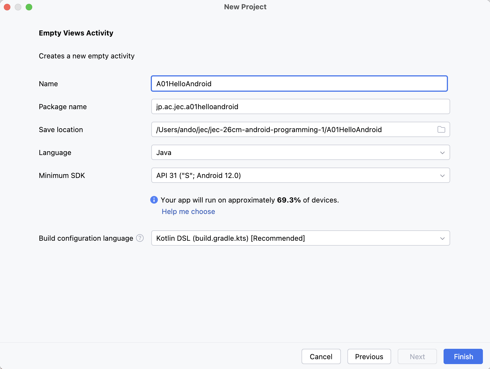
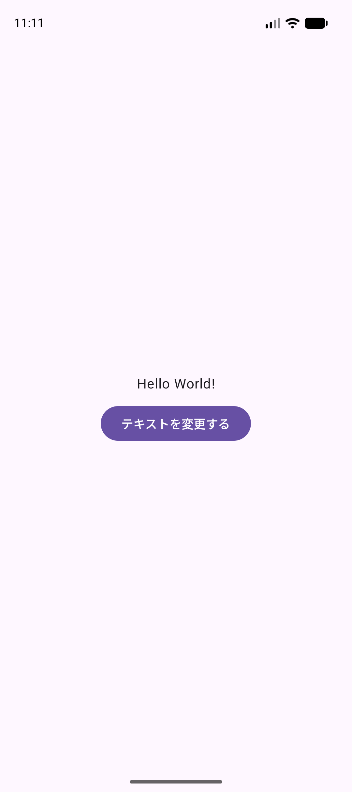
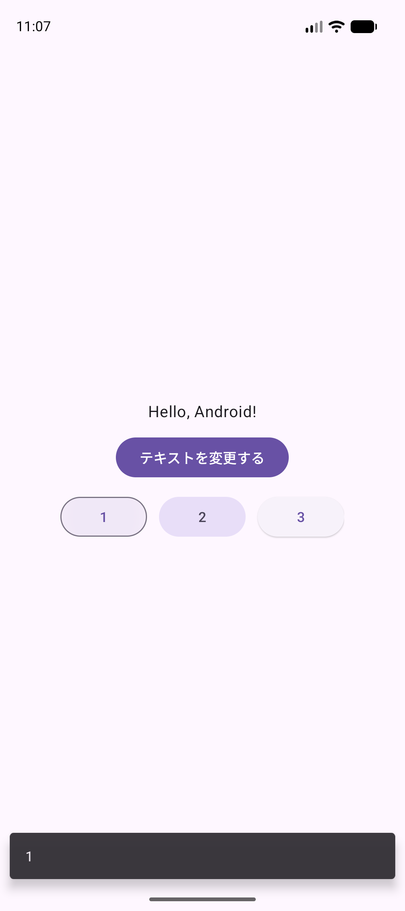
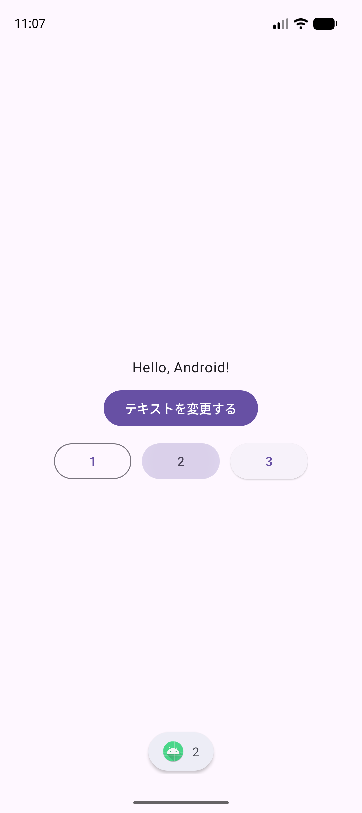

HELLO ANDROID
はじめての
アプリ作り
ボタンを押す。文字が変わる。
小さい「できた」を、ひとつずつ。
今日できるようになること
スマートフォンのアプリは、画面と動きを組み合わせて作ります。今日は、ボタンを押すと文字が変わるアプリを作ります。
{kind=link}

{kind=link}

ゴールは3つ
- 自分のMacでアプリを起動（きどう）できる。
- ボタンを押して、画面の文字を変えられる。
- 「1」でSnackbar、「2」でToastを表示できる。
「3」は、ボタンの見た目を比べるために置きます。押してもメッセージは出ません。
2コマで進めます（1コマ90分）
| 授業 | 進めるところ | できるようになること |
|---|---|---|
| 1コマ目 | STEP 0〜4 | プロジェクトを作り、ボタンで文字を変える。 |
| 2コマ目 | STEP 5〜9 | ログと短いメッセージを確認し、自分で少し変える。 |
各コマに、操作をやり直す時間と、先生と一緒に確認する時間があります。
この授業では、毎回、自分でAndroid Studioからプロジェクトを新規作成します。今回はSTEP 1から A01HelloAndroid を作ります。
完成プロジェクトは、最初の授業からいつでも見られる参考資料です。自分で作ったコードと比べたり、動きを確かめたりするときに使います。
この教科書の進め方
先生の説明を聞く → 小さい範囲を入力する → Runで動かす → チェックする。この順で進めます。家で予習していなくても始められます。
分からない言葉に印を付けましょう。「STEP 4の、varが分かりません」のように、ステップ番号と言葉だけでも質問できます。
まず使う言葉
| 言葉・読み方 | この授業での意味 |
|---|---|
| プロジェクト | 1つのアプリを作るためのファイルの集まり。 |
| コード | コンピュータへの指示を書いた文。 |
| XML（エックスエムエル） | 文字やボタンの位置・見た目を書くファイル。 |
| Java（ジャバ） | ボタンを押したときの動きなどを書く言語。 |
| 実行（じっこう） / Run（ラン） | 作ったアプリを動かすこと。 |
| エミュレータ | Macの中で動く、練習用のAndroid端末。 |
ここで止まって、確認（かくにん）
できたらチェックします。できないときは、この画面を先生に見せましょう。
プロジェクトを作る
このステップのゴール
A01HelloAndroid をAndroid Studioで開きます。
授業では Android Studio Panda 2 | 2025.3.2 とMacを使います。最初の準備にはインターネット接続が必要です。
Android Studioの「Java / Empty Views Activity」のひな形から、自分のプロジェクトを新しく作ります。
- Android Studioを開き、New Project（新しいプロジェクト）をクリックします。別のプロジェクトが開いていたら、上のメニューから File → New → New Project を選びます。
{kind=link}

- Phone and Tablet → Empty Views Activity → Next の順に選びます。Views の文字を確認してください。
{kind=link}

- Finderの 移動 → ホーム を開き、ホームフォルダの名前（自分のユーザ名）を確認します。
- その中の 書類（Documents） を開きます。
Android1フォルダがなければ、ファイル → 新規フォルダ で作り、名前をAndroid1にします。 - Android Studioに戻り、次の表に合わせて入力します。
| 画面の項目 | 入力・選択する内容 |
|---|---|
| Name（名前） | A01HelloAndroid |
| Package name（アプリを区別する名前） | jp.ac.jec.a01helloandroid（すべて小文字） |
| Save location（保存する場所） | /Users/ユーザ名/Documents/Android1/A01HelloAndroid「ユーザ名」を、自分のMacのユーザ名に読み替えます。 |
| Language（言語） | Java |
| Minimum SDK（動作するAndroidの下限） | API 31（Android 12.0） |
| Build configuration language | Kotlin DSL（build.gradle.kts）。アプリを書く言語のJavaとは別の設定です。 |
{kind=link}

/Users/ユーザ名/Documents/Android1/A01HelloAndroid に読み替えます。 画像を大きく開くFinishを押す前に、保存先を確認
ユーザ名が cmstudent の場合は、/Users/cmstudent/Documents/Android1/A01HelloAndroid です。ユーザ名 という文字をそのまま入力しません。
保存先の最後が Documents/Android1/A01HelloAndroid になっていることを確認します。すでに同名のプロジェクトがあるときは、先生に画面を見せます。
- Finish（完了）をクリックします。
- Gradle Sync（必要な設定や部品をそろえる処理）が終わるまで待ちます。下の進行表示が終わり、失敗を示す赤い表示がなければ次へ進みます。
MainActivity.ktができたとき
この授業で開くのは MainActivity.java です。.kt しか見つからない場合は、先生に画面を見せてください。Empty Views Activity / Javaの選択を確認します。
プロジェクトが開いたら、共通資料：Auto Importの設定を行います。この設定は、以降のJavaの入力で使います。
ここで止まって、確認（かくにん）
できたらチェックします。できないときは、この画面を先生に見せましょう。
ファイルを見つけて動かす
まず、何も変えずに実行します。最初の画面を確かめてから、コードを変えます。
① 使うファイルを2つ見つける
- 左のフォルダ一覧を開きます。見えないときは View → Tool Windows → Project。
- 一覧の上が Project になっていることを確認します。Panda 2では、最初からProject表示です。
A01HelloAndroid → app → src → main → res → layout → activity_main.xmlをダブルクリックします。A01HelloAndroid → app → src → main → java → jp → ac → jec → a01helloandroid → MainActivity.javaを開きます。jp.ac.jec.a01helloandroidのように、途中のフォルダがまとめて表示される場合もあります。
| ファイル | 何を書く？ |
|---|---|
activity_main.xml | 文字やボタンを、どこに置くか。 |
MainActivity.java | ボタンを押したら、何をするか。 |
どちらも app/src/main の中です。src/test と src/androidTest は今回の編集場所ではありません。
② Runで動かす
- 共通資料：エミュレータの準備とアプリの実行 を開き、端末を起動します。
- Android Studioの上部で実行するものを app、端末を jec_26cm_android1_Pixel 9a にします。
- 三角形の Run ▶ をクリックします。
- 端末画面に Hello World! だけが出れば成功です。最初の起動は時間がかかることがあります。
{kind=link}
ここで止まって、確認（かくにん）
できたらチェックします。できないときは、この画面を先生に見せましょう。
文字とボタンを置く
このステップのゴール
画面の中央に、文字と「テキストを変更する」ボタンを縦に並べます。
変更するファイル：app/src/main/res/layout/activity_main.xml
① XMLを文字で表示する
activity_main.xml を開き、エディタ右上の Code を選びます。Codeは文字で編集する表示、Designは見た目で編集する表示です。アイコンだけの場合は、マウスを重ねて名前を確認します。
② ファイル全体を、次の内容に置き換える
XMLの中をクリックし、⌘ A で全部選びます。下のコードをコピーし、⌘ V で貼り付けます。
ここでは、ひな形の ConstraintLayout を、縦に並べやすい LinearLayout に変えます。古いXMLに追加せず、全体を置き換えます。
<?xml version="1.0" encoding="utf-8"?>
<LinearLayout xmlns:android="http://schemas.android.com/apk/res/android"
xmlns:tools="http://schemas.android.com/tools"
android:id="@+id/main"
android:layout_width="match_parent"
android:layout_height="match_parent"
android:gravity="center"
android:orientation="vertical"
tools:context=".MainActivity">
<TextView
android:id="@+id/text"
style="@style/TextAppearance.Material3.BodyLarge"
android:layout_width="wrap_content"
android:layout_height="wrap_content"
android:text="Hello World!" />
<Button
android:id="@+id/button"
android:layout_width="wrap_content"
android:layout_height="wrap_content"
android:layout_marginTop="12dp"
android:text="テキストを変更する" />
</LinearLayout>③ 変えたところを読む
| コード | 意味 |
|---|---|
LinearLayout（リニアレイアウト） | 部品を一列に並べる入れ物。 |
orientation="vertical" | 中の部品を縦に並べる。 |
gravity="center" | 中の部品を中央に置く。 |
TextView / Button | 文字を表示する部品 / 押せる部品。 |
android:id="@+id/text" | 部品に text という名前を付ける。あとでJavaから探すための目印。 |
android:text | 画面に表示する文字。部品のidとは別。 |
match_parent | 親の入れ物の大きさに合わせる。 |
wrap_content | 中身に必要な大きさにする。 |
layout_marginTop="12dp" | 上にすき間を作る。dp は画面上の大きさを指定する単位。 |
style | 用意された見た目の設定を使う。 |
<LinearLayout> で入れ物を始め、</LinearLayout> で閉じます。<TextView … /> の /> は、その部品の終わりです。
入力のポイント
id/main は、ひな形のJavaでも使っています。消さずに残します。記号は半角の "、<、> を使います。
文字を直接書くと Hardcoded string という警告が出る場合があります。この単元では文字を直接書きます。赤いエラーで実行できない場合は、警告と分けて先生に見せてください。
④ Runで確かめる
Run ▶。Hello World!の下にボタンが出ます。今は押しても文字が変わりません。動きは次のステップで付けます。
{kind=link}

ここで止まって、確認（かくにん）
できたらチェックします。できないときは、この画面を先生に見せましょう。
ボタンを押して文字を変える
変更するファイル：app/src/main/java/jp/ac/jec/a01helloandroid/MainActivity.java
MainActivity は、このアプリの画面を担当します。onCreate（オン・クリエイト）は、その画面を作るときに呼ばれるメソッドです。メソッドは、いくつかの処理に名前を付けたまとまりです。
Javaを入力すると、設定したAuto Importが必要なimport文を追加します。設定がまだの場合は、共通資料で確認します。
① 追加する場所を見つける
ひな形の ViewCompat.setOnApplyWindowInsetsListener から始まる部分を見つけます。その末尾の return insets; と }); の下に追加します。onCreate の最後の } より上です。
ViewCompat.setOnApplyWindowInsetsListener(findViewById(R.id.main), (v, insets) -> {
Insets systemBars = insets.getInsets(WindowInsetsCompat.Type.systemBars());
v.setPadding(systemBars.left, systemBars.top, systemBars.right, systemBars.bottom);
return insets;
});
// この位置に、次のコードを追加します。
}
}上のひな形の部分は、画面の端の余白を調整します。今日はそのまま使います。
② 次のコードを追加する
var text = (TextView) findViewById(R.id.text);
var button = (Button) findViewById(R.id.button);
button.setOnClickListener(v -> {
text.setText("Hello, Android!");
});③ 1行ずつ意味を確かめる
| コード | 意味 |
|---|---|
findViewById(R.id.text) | XMLで @+id/text と名前を付けた部品を探す。R はAndroidが用意する資源の一覧。自分でRファイルは作りません。 |
(TextView) | 見つけた部品を、文字の部品として扱う指定（キャスト）。 |
var text = …; | 見つけた部品を text という名前で使えるようにする。この名前を変数（へんすう）といいます。var は、右側から変数の型を決めます。 |
setOnClickListener | ボタンが押されたときに行う処理を登録する。 |
v -> { … } | クリックされたら、波かっこの中を実行する書き方。v は押された部品です。この処理では使いません。 |
text.setText("Hello, Android!"); | text の表示文字を変える。" " の中が文字です。 |
= は右側の結果を左側の名前に入れる記号です。; は文の終わり。( ) には必要な情報を渡し、{ } で処理の範囲を囲みます。
押す前に予想する
アプリを起動しただけでHello, Android!に変わるでしょうか。予想をメモしてから、Runで確かめましょう。
確かめたあとに答えを見る
起動したときはHello World!。変更ボタンを押すとHello, Android!になります。setText がクリックの処理の中にあるからです。
④ Runで確かめる
- Runします。
- 最初は Hello World! と表示されることを確認します。
- テキストを変更する を1回押します。
- Hello, Android! に変われば成功です。もう1回押しても、同じ文字が表示されます。
ここで止まって、確認（かくにん）
できたらチェックします。できないときは、この画面を先生に見せましょう。
1コマ目はここまで
残りの時間で、Stop → Run → 変更ボタンを押す操作をもう一度行います。先生に「文字を変える行」を見せましょう。できたステップと困ったところをメモします。
2コマ目はこのプロジェクトを開き、文字変更を確認してからSTEP 5へ進みます。家での予習は必要ありません。
Logcatで動きを見る
ログは、開発者が動きを確認するための記録です。アプリの画面に出る文字とは別に、Android Studioの Logcat（ログキャット）で読みます。
変更するファイル：MainActivity.java
① STEP 4で追加した部分を置き換える
var text = … から、変更ボタンの処理の最後の }); までを、次のコードに置き換えます。上のひな形と、下の2つの } は残します。
var text = (TextView) findViewById(R.id.text);
var button = (Button) findViewById(R.id.button);
var string = text.getText().toString();
Log.d("MainActivity", string);
button.setOnClickListener(v -> {
text.setText("Hello, Android!");
var updateString = text.getText().toString();
Log.d("MainActivity", updateString);
});② 新しい4行の意味
getText()：今表示されている文字を取り出す。toString()：取り出した値をString（文字列）の形にする。var string = …/var updateString = …：取り出した文字に名前を付ける。textは画面の部品、stringは取り出した文字です。Log.d("MainActivity", string)：目印MainActivityを付けて、stringの内容をログに出す。dはDebug（動作確認用）です。
③ Logcatを開いてRunする
- 共通資料：Logcatの使い方 に従ってLogcatを開きます。
- 検索欄に
package:jp.ac.jec.a01helloandroid tag:MainActivity level:DEBUGと入力します。 - Runします。ログに
Hello World!が出ます。 - 変更ボタンを押します。新しい行に
Hello, Android!が出ます。
時刻や行の数は同じでなくて構いません。メッセージの文字を比べます。
ここで止まって、確認（かくにん）
できたらチェックします。できないときは、この画面を先生に見せましょう。
3つのボタンを横に並べる
変更するファイル：activity_main.xml
縦に並ぶ入れ物の中に、横に並ぶ小さい入れ物を追加します。
LinearLayout（縦）
├─ TextView「Hello World!」
├─ Button「テキストを変更する」
└─ LinearLayout（横） ← ここを追加
├─ Button「1」
├─ Button「2」
└─ Button「3」① ファイルの最後に追加する
最後の </LinearLayout> の直前に、次のコードを追加します。「テキストを変更する」ボタンの /> より下です。
<LinearLayout
android:layout_width="wrap_content"
android:layout_height="wrap_content"
android:layout_marginTop="12dp"
android:orientation="horizontal">
<Button
android:id="@+id/btn1"
style="@style/Widget.Material3.Button.OutlinedButton"
android:layout_width="wrap_content"
android:layout_height="wrap_content"
android:text="1" />
<Button
android:id="@+id/btn2"
style="@style/Widget.Material3Expressive.Button.TonalButton"
android:layout_width="wrap_content"
android:layout_height="wrap_content"
android:layout_marginHorizontal="12dp"
android:text="2" />
<Button
style="@style/Widget.Material3.Button.ElevatedButton"
android:layout_width="wrap_content"
android:layout_height="wrap_content"
android:text="3" />
</LinearLayout>追加後は、ファイルの下に </LinearLayout> が2つあります。1つは横の入れ物、もう1つは外側の縦の入れ物を閉じます。
② 縦と横の違いを読む
| 設定 | 意味 |
|---|---|
orientation="horizontal" | この入れ物の中の部品を横に並べる。 |
layout_marginHorizontal="12dp" | 「2」のボタンの左右にすき間を作る。 |
OutlinedButton | 枠線のあるボタン。 |
TonalButton | 背景に色が付くボタン。 |
ElevatedButton | 影が付くボタン。 |
style の長い名前は、用意された見た目の名前です。今日は暗記せず、正しくコピーして見た目を比べます。
追加する場所が分からない：この時点のXML全体
下の内容で、この時点のXMLを確認できます。
<?xml version="1.0" encoding="utf-8"?>
<LinearLayout xmlns:android="http://schemas.android.com/apk/res/android"
xmlns:tools="http://schemas.android.com/tools"
android:id="@+id/main"
android:layout_width="match_parent"
android:layout_height="match_parent"
android:gravity="center"
android:orientation="vertical"
tools:context=".MainActivity">
<TextView
android:id="@+id/text"
style="@style/TextAppearance.Material3.BodyLarge"
android:layout_width="wrap_content"
android:layout_height="wrap_content"
android:text="Hello World!" />
<Button
android:id="@+id/button"
android:layout_width="wrap_content"
android:layout_height="wrap_content"
android:layout_marginTop="12dp"
android:text="テキストを変更する" />
<LinearLayout
android:layout_width="wrap_content"
android:layout_height="wrap_content"
android:layout_marginTop="12dp"
android:orientation="horizontal">
<Button
android:id="@+id/btn1"
style="@style/Widget.Material3.Button.OutlinedButton"
android:layout_width="wrap_content"
android:layout_height="wrap_content"
android:text="1" />
<Button
android:id="@+id/btn2"
style="@style/Widget.Material3Expressive.Button.TonalButton"
android:layout_width="wrap_content"
android:layout_height="wrap_content"
android:layout_marginHorizontal="12dp"
android:text="2" />
<Button
style="@style/Widget.Material3.Button.ElevatedButton"
android:layout_width="wrap_content"
android:layout_height="wrap_content"
android:text="3" />
</LinearLayout>
</LinearLayout>③ Runで確かめる
変更ボタンの下に、1・2・3 が左から右へ並びます。この時点では、数字のボタンを押してもメッセージは出ません。
ここで止まって、確認（かくにん）
できたらチェックします。できないときは、この画面を先生に見せましょう。
SnackbarとToastを表示する
数字のボタンを押したら、その数字を短いメッセージとして表示します。
| 押すボタン | 使うもの・読み方 | 今回の見え方 |
|---|---|---|
| 1 | Snackbar（スナックバー） | アプリの下に「1」の帯が出て、しばらくすると消える。 |
| 2 | Toast（トースト） | 画面の下の方に、アプリのアイコンと「2」が出て消える。 |
| 3 | 処理を追加しない | メッセージは出ない。見た目を比べるためのボタン。 |
変更するファイル：MainActivity.java
① 数字のボタンを探す2行を追加する
var button = (Button) findViewById(R.id.button); のすぐ下に追加します。
var btn1 = (Button) findViewById(R.id.btn1);
var btn2 = (Button) findViewById(R.id.btn2);② 数字のボタンの動きを追加する
変更ボタンの button.setOnClickListener の閉じる }); の下、onCreate の最後の } より上に追加します。変更ボタンの処理は残します。
btn1.setOnClickListener(v -> {
var btn1Str = btn1.getText().toString();
Snackbar.make(findViewById(R.id.main), btn1Str, Snackbar.LENGTH_SHORT).show();
});
btn2.setOnClickListener(v -> {
var btn2Str = btn2.getText().toString();
Toast.makeText(this, btn2Str, Toast.LENGTH_SHORT).show();
});btn1.getText() と btn2.getText() で、ボタンに書かれた文字を取り出しています。数字の計算はしていません。
| 部分 | 役割 |
|---|---|
Snackbar.make(…) | 表示するSnackbarを作る。 |
findViewById(R.id.main) | Snackbarの表示先を探すため、画面の部品を渡す。 |
Toast.makeText(this, …) | 表示するToastを作る。ここでの this は、今の画面を担当するMainActivity。 |
btn1Str / btn2Str | メッセージとして表示する文字。 |
LENGTH_SHORT | 短い時間だけ表示する設定。 |
.show() | 作ったメッセージを実際に表示する。忘れると表示されない。 |
③ 1つずつ押して確かめる
- Runします。
- 「1」を押します。下の帯に「1」が出たら、消えるまで待ちます。
- 「2」を押します。小さな表示に「2」が出たら、消えるまで待ちます。
- 「3」を押します。メッセージが出ないことを確かめます。
{kind=link}

{kind=link}

画像は変更ボタンを押した後に撮影しています。上の文字がHello World!のままでも、数字のメッセージが出ればこのステップは成功です。色やアイコンの形は、端末の設定で少し違うことがあります。
ここで止まって、確認（かくにん）
できたらチェックします。できないときは、この画面を先生に見せましょう。
少し変えて、確かめる
ここからは、自分で小さい変更をします。1つ変える → 予想する → Runするの順です。答えは、試してから開きましょう。
練習A · 自分の言葉に変える（必須・5分）
やること
変更ボタンを押したら こんにちは、Android! と表示されるようにします。どのファイルの、どの文字を変えますか。
ヒント
クリックしたときの処理にある setText を探します。" " の中を変えます。
試したあと：答えと理由
text.setText("こんにちは、Android!");Javaのクリック処理を変えます。XMLのHello World!は、起動時の文字です。Runしてボタンを押し、画面とLogcatの両方で確かめましょう。
練習B · 文字を取り出すしくみ（必須・5分）
やること
XMLの id/btn1 のボタンだけ、android:text="1" を android:text="できた" に変えます。JavaはそのままでRunします。ボタンを押すと、Snackbarに何が出るでしょうか。
試したあと：答えと理由
ボタンもSnackbarも「できた」になります。Javaが btn1.getText().toString() で、ボタンに表示されている文字を取り出しているからです。
練習C · 余白を比べる（時間が余ったら）
変更ボタンの layout_marginTop を 12dp から 24dp に変えます。Runして、文字とボタンのすき間を比べてください。
最後の5分 · 元に戻し、記録する
- 練習Aの文字を
Hello, Android!に戻します。 - 練習Bのボタンを
1に戻します。 - 練習Cをした人は余白を
12dpに戻します。 - Runし、「＿＿を変えたので、＿＿が変わりました」と、変更したことを1つメモします。
ここで止まって、確認（かくにん）
できたらチェックします。できないときは、この画面を先生に見せましょう。
完成を確認して、記録する
① 完成チェック
Runし、上から順に操作します。最初の文字に戻したいときは、Android Studioの Stop ■ を押してから Run ▶ を押します。
| 操作 | 成功したとき |
|---|---|
| 起動する | Hello World!、変更ボタン、1・2・3が出る。LogcatにHello World!が出る。 |
| 変更ボタンを押す | 画面がHello, Android!になり、Logcatにも同じ文字が出る。 |
| 1を押す | Snackbarに1が出て、しばらくすると消える。 |
| 2を押す | Toastに2が出て、しばらくすると消える。 |
| 3を押す | メッセージは出ない。 |
② 3問でふり返る
- 部品の位置を書くファイルは、XMLとJavaのどちらですか。
setTextとgetTextは、それぞれ何をしますか。- ボタンの処理は、起動時とクリック時のどちらに実行されますか。
自分で答えてから確認する
- XML（activity_main.xml）。
- setTextは文字を変える。getTextは今の文字を取り出す。
- クリック時。起動時にsetOnClickListenerでその処理を登録します。
③ 授業の記録を残す
次の4項目を、先生が指定する用紙や提出先に書きます。このページのチェックは自分用で、先生には送信されません。
- 学籍番号・氏名
- できたステップ：STEP ＿＿まで
- 説明できること：「＿＿を変えると、＿＿になる」
- まだ困っていること：「STEP ＿＿の＿＿」／困っていなければ「なし」
先生に画面を見せ、変更ボタン・1・2を順番に押します。APKの提出を指示された場合は、共通資料：提出用APKの作り方を使います。
完成したJava全体を確認する
ここまで入力したJavaを確認できます。XMLの全体はSTEP 6の完成XMLです。package名は jp.ac.jec.a01helloandroid を使います。
package jp.ac.jec.a01helloandroid;
import android.os.Bundle;
import android.util.Log;
import android.widget.Button;
import android.widget.TextView;
import android.widget.Toast;
import androidx.activity.EdgeToEdge;
import androidx.appcompat.app.AppCompatActivity;
import androidx.core.graphics.Insets;
import androidx.core.view.ViewCompat;
import androidx.core.view.WindowInsetsCompat;
import com.google.android.material.snackbar.Snackbar;
public class MainActivity extends AppCompatActivity {
@Override
protected void onCreate(Bundle savedInstanceState) {
super.onCreate(savedInstanceState);
EdgeToEdge.enable(this);
setContentView(R.layout.activity_main);
ViewCompat.setOnApplyWindowInsetsListener(findViewById(R.id.main), (v, insets) -> {
Insets systemBars = insets.getInsets(WindowInsetsCompat.Type.systemBars());
v.setPadding(systemBars.left, systemBars.top, systemBars.right, systemBars.bottom);
return insets;
});
var text = (TextView) findViewById(R.id.text);
var button = (Button) findViewById(R.id.button);
var btn1 = (Button) findViewById(R.id.btn1);
var btn2 = (Button) findViewById(R.id.btn2);
var string = text.getText().toString();
Log.d("MainActivity", string);
button.setOnClickListener(v -> {
text.setText("Hello, Android!");
var updateString = text.getText().toString();
Log.d("MainActivity", updateString);
});
btn1.setOnClickListener(v -> {
var btn1Str = btn1.getText().toString();
Snackbar.make(findViewById(R.id.main), btn1Str, Snackbar.LENGTH_SHORT).show();
});
btn2.setOnClickListener(v -> {
var btn2Str = btn2.getText().toString();
Toast.makeText(this, btn2Str, Toast.LENGTH_SHORT).show();
});
}
}ここで止まって、確認（かくにん）
できたらチェックします。できないときは、この画面を先生に見せましょう。
今日のまとめ
XMLで部品を置く → idで探す → クリックの処理を書く。
この3つを使って、自分で動かせるアプリを作りました。
完成プロジェクトを開いて比べる
授業は、毎回自分で新規作成したプロジェクトで進めます。完成版は、動作確認とコード比較のための見本です。見本は samples フォルダに置きます。
① 見本の置き場所を用意する
- Finderで 書類（Documents） → Android1 を開きます。
samplesというフォルダがなければ作ります。見本を置くためのフォルダです。- ダウンロードしたZIPを
samplesに移動し、ダブルクリックして展開します。すでにフォルダになっている場合は、そのA01HelloAndroidフォルダをsamplesに移動します。
| 使うもの | フォルダの場所（ユーザ名は自分のものに読み替える） |
|---|---|
| 授業で作るプロジェクト | /Users/ユーザ名/Documents/Android1/A01HelloAndroid |
| 完成版の見本 | /Users/ユーザ名/Documents/Android1/samples/A01HelloAndroid |
② Android Studioで開く
- File → Open で
samples/A01HelloAndroidを選びます。最初の画面なら Open をクリックします。 - 開き方を聞かれたら New Window を選び、授業のプロジェクトと別のウィンドウで開きます。
- Gradle Syncが終わったら、Project表示で、調べたいファイルを開きます。
- 動きを見たいときは Run ▶ を押します。
③ 今のステップの部分だけを比べる
たとえばSTEP 4で困ったら、MainActivity.java の button.setOnClickListener の部分を見ます。今のステップと同じidや処理を探して比べましょう。
見終わったら、授業で作っている Documents/Android1/A01HelloAndroid のウィンドウに戻ります。直す場所を1つ確認し、Runして結果を確かめます。分からないときは、先生に2つのコードを見せましょう。
止まった場所から、一緒に直す
赤くなっている最初の行を見ます。2分考えても分からなければ、先生に「ステップ番号・ファイル名・画面」を見せましょう。
| 困ったこと | 最初に確認すること |
|---|---|
| ファイルが見つからない | 左上のプロジェクト名と、Project一覧の表示方法を確認。STEP 2の場所をたどる。 |
| XMLが赤い | " の閉じ忘れ、/>、</LinearLayout> を確認。Code表示で、最初の赤い場所を先生に見せる。 |
| TextView / Button / Log / Toast / Snackbarが赤い | 共通資料：自動で追加されないときでAuto Importの設定と候補を確認する。 |
| R.id.text / btn1 / btn2が赤い | XMLのidとJavaの名前を一文字ずつ比較する。大文字と小文字も区別する。XMLのエラーを先に直す。 |
| R全体が赤い | XMLの最初のエラーを確認。import android.R; があれば、その行を削除する。package名も確認する。 |
| 波かっこやセミコロンのエラー | 追加コードがonCreateの中にあるか確認する。教材のコードと、前後の }); と } を比べる。 |
| アプリがすぐ閉じる | setContentView より下で部品を探しているか、XMLに必要なidがあるか確認。Logcatの赤いエラーを先生に見せる。 |
| 押しても文字が変わらない | Runしたか、正しいアプリを見ているか確認。XMLのid/buttonとJavaのR.id.buttonを比べる。 |
| Snackbar / Toastが出ない | 1か2を押したか、最後に .show() があるか確認。短時間で消えるので押した直後を見る。 |
| styleが見つからない | 名前をコピーし直す。直らなければ先生に見せる。先生がMaterialのバージョンを確認する。 |
| ログが見つからない | 共通資料の「ログが出ないとき」へ。 |
| Runできない・端末がない | 共通資料の「動かないとき」へ。エラー文を消さずに先生に見せる。 |
一度にいくつも直すと、何が変わったか分かりにくくなります。1か所直して、もう一度Runしましょう。
もっと知りたいとき
授業はこの教科書だけで進められます。次の公式資料は、あとから調べたい人向けです。